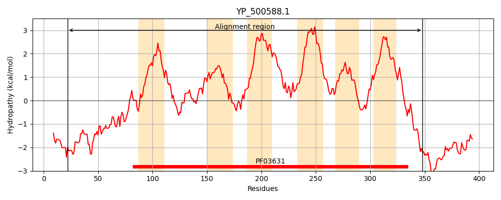
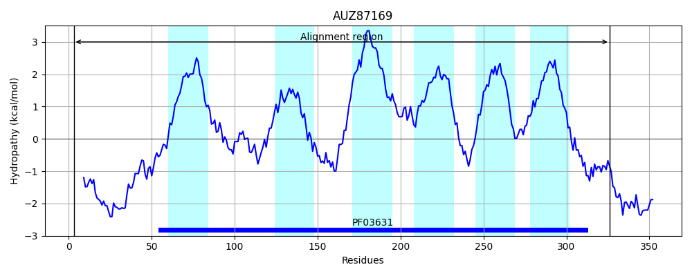
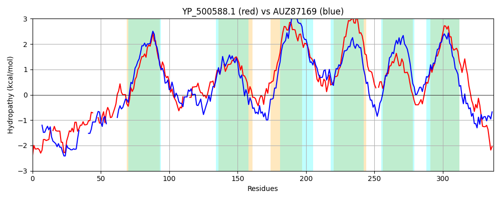

Hit Accession: AUZ87169
Hit TCID: 9.B.126.2.9
Hit Description: gnl|BL_ORD_ID|1473 gnl|TC-DB|AUZ87169.1|9.B.126.2.9 ribonuclease BN [Arthrobacter agilis]
Mach Len: 337
e:0.000000
Query TMS Count : 6
Hit TMS Count: 6
TMS-Overlap Score: 5.750000
Predicted Substrates:None
BLAST Alignment:
Score: 376 , Bit scores: 149 bits, E-value: 2.1e-41, Alignment length: 337, Percentage identity: 31
Query: 22 SKKKNKSNPKIDVD-RTYIEPQQFQSKKPKKDDQVFFLSRLNKPA---KYKKDSNFLSYLIYRIGKDDASGLAAQMTYHFVLAMFPMLLFLLTLLPFFNIKQSQITNMLSN----APAETSTLIKSVIGDITQNSSGGL-LSIGLILAIWSASNGMTAIMNSFNVAYDVEDSRNGIVLKLLSVVFTVVMGVVFVVALALPTLGSVISHFLFGPLGFDEQVKWIFNLIRIVLPIIIIFIIFIVLYSVAPNVKT-KLKSVLPGAVFTSIIWLAGSFGFGWYISNFGNYSKTYGSIAGIIILLLWLYITSFIIIVGAEINAIIHQRSVIKGKTPEEAALE 348
S K S PK D + P +KP V KPA +K+ N GKD + LAA +TY+ VLA+FP +L LL+LL F Q+ +L AP +T I+ I D+ N + GL IGL+ AIWSAS + A + N Y+VE+ R L+ ++ TVV+ V+ VV + L ++ + +G I+N+ + + + ++ VLY +PNVK K + + G I+ + F Y++NFG+Y KTYG+IAG+I+LLLW+++ + ++ G E +A + + ++G E ++
Sbjct: 3 SNSKVGSEPKSDASQKAQTAPDPNDPRKPDDPKDV------GKPAWKYVFKRSLN-------EFGKDQCTDLAAALTYYAVLAIFPGILALLSLLGLFGQAQNTTNQVLEIVGQFAPPDTLETIRPTIEDLASNQAAGLTFVIGLLGAIWSASGYVNAFSRAMNRVYEVEEGRGFFKLRPQMLLVTVVVLVLIVVMGLMLVLSGPVAEAVGNTIGLGGSALTIWNIAKWPVVVFFAVLMIAVLYYGSPNVKQPKFRWMSLGGFIALIVLAITTAAFSLYVANFGSYDKTYGAIAGVIVLLLWIWLANLSLLFGVEFDAEMERGRELQGGIEAEDGIQ 326 | Protein Hydropathy Plots: |
|---|
|  |  |
Pairwise Alignment-Hydropathy Plot:
|
|---|
|  |